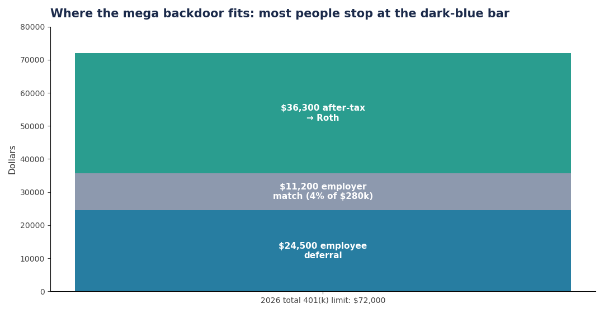
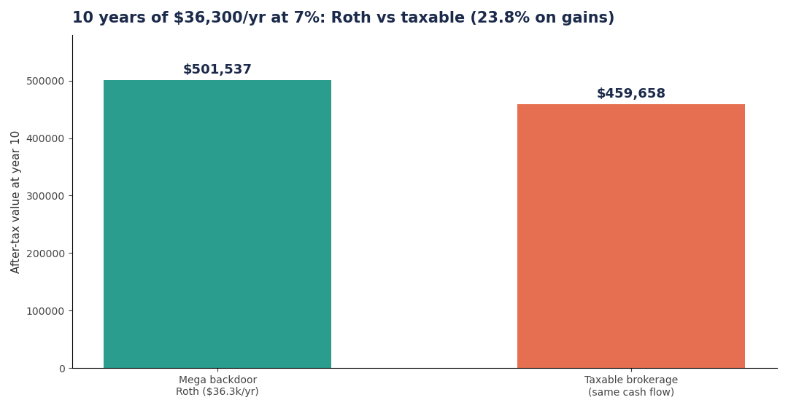
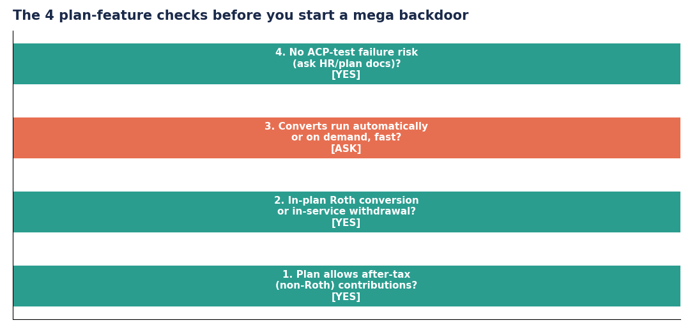

Everyone knows the 2026 401(k) employee limit: $24,500. Almost nobody acts on the real limit: $72,000 of total annual additions under Section 415(c). The gap between those two numbers — filled with after-tax contributions and converted to Roth — is the mega backdoor Roth. The White Coat Investor calls it the "secret" ultimate Roth contribution and has a full standard-and-mega backdoor guide — the mechanics below use the official 2026 IRS limits.
The bucket, filled in order
Your 401(k) fills from three spigots, all counting toward the same $72,000 ceiling (catch-up contributions sit on top, outside the cap):
- Your elective deferral: $24,500 (pre-tax or Roth)
- Employer match / profit-sharing: whatever your plan gives
- After-tax (non-Roth) contributions: everything left over, converted to Roth
Example: $280,000 salary, 4% employer match ($11,200), full $24,500 deferral. Used so far: $35,700. After-tax headroom: $72,000 − $35,700 = $36,300. That $36,300 goes in after-tax and gets converted to Roth — ideally automatically, within the plan.

Over 10 years at 7%, that $36,300/year becomes $501,500 of Roth money — versus roughly $430,000 in a taxable account after tax drag on dividends and a 23.8% haircut on gains. The mega backdoor's edge is about $70,000 per decade at this contribution level, and it compounds from there.

The four plan-feature checks
The strategy only works if your plan supports both halves. Ask HR or read the plan documents:

- After-tax (non-Roth) contributions allowed? This is a separate contribution type from Roth 401(k). Only ~10–15% of employer plans offer it — though most custom solo 401(k)s do.
- In-plan Roth conversion or in-service withdrawal? You need a way to get after-tax dollars into Roth. Automatic in-plan conversions are ideal; periodic manual conversions work too.
- How fast do conversions happen? After-tax contributions grow tax-deferred, not tax-free — earnings are taxable when converted. Convert within days, not months, to keep the taxable earnings near zero.
- ACP testing risk? After-tax contributions are subject to nondiscrimination testing. In top-heavy plans, highly compensated employees can get contributions refunded. Ask before you max it.
What not to do
- Don't confuse after-tax with Roth. After-tax 401(k) contributions are the worst of both worlds until converted: no deduction going in, taxable earnings. The conversion is the whole strategy.
- Don't do it if your plan allows after-tax but no conversion. Unconverted after-tax money is usually worse than a taxable brokerage account, which gets long-term capital gains rates, qualified dividends, tax-loss harvesting, and the step-up at death. As WCI puts it: without both halves, the strategy falls apart.
- Don't let earnings pile up before converting. A $36,300 contribution sitting unconverted for a year at 7% generates ~$2,500 of taxable earnings at conversion. Automate it.
- Don't blow the $72,000 cap. Overcontributing after-tax dollars triggers excess-contribution corrections. Track deferral + match + after-tax across all 401(k)s if you changed jobs mid-year.
- Don't skip the regular backdoor Roth first. The $7,500 IRA backdoor is available to everyone regardless of plan features — do that before fighting HR over after-tax provisions.
Takeaways
- The 2026 401(k) universe is $72,000, not $24,500: deferral + employer money + after-tax headroom.
- A $280k earner with a 4% match can typically route ~$36,000/year into Roth via the mega backdoor — worth ~$70k more per decade than taxable.
- Two plan features are non-negotiable: after-tax contributions and a conversion path. One without the other is worse than a brokerage account.
- Convert fast, watch the $72,000 ceiling, and check ACP-test risk with HR first.
Further reading: White Coat Investor: Backdoor Roth — Standard and Mega, WCI: The "Secret" Ultimate Roth Contribution, and the IRS 2026 COLA limits page for the $24,500 / $72,000 figures.
Not tax, legal, or investment advice. Check your own situation and talk to a professional before acting.